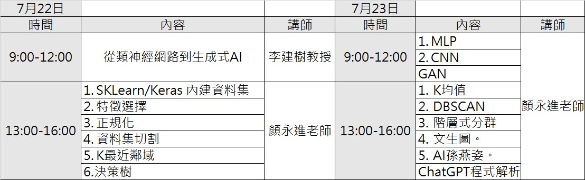

20240722和AI做朋友-實作培訓
Table of Contents

1. 研習內容
- 系列研習: 和AI做朋友-實作培訓
- 時間： 113年7月22日 09:00 ~ 113年7月23日 14:00
- 180分鐘: 數位教學與評量工具介紹(50分鐘) + 教學評量案例分享(90分鐘)
- 對象: 高雄市公私立國中教師，預估25人
1.1. 課表

Figure 1: 課程表
1.2. 前置作業
1.2.1. 教材、講義
1.2.2. 登入: Google Classroom
- 課程代碼：
- 邀請連結:
1.2.3. 投影片下載
- 我是這次研習的投影片
2. 從類神經網路到生成式AI
- 113年7月22日 09:00 ~ 12:00
- 李建樹教授
3. 資料集、特徵與資料預處理
3.1. SKLearn / Keras 內建資料集
3.2. 特徵選擇
3.3. 正規化
3.4. 資料集切割
3.5. K最近鄰域
3.6. 決策樹
4. 監督式學習
4.1. MLP
4.2. 深度學習
4.3. CNN
5. 非監督式學習
- 113年7月23日 13:00 ~ 16:00
- 對應教材: 第六章 非監督式學習
- 參考教材
5.1. K均值
5.2. DBSCAN
5.3. 階層式分群
5.4. 文生圖
5.5. AI孫燕姿
- 歌詞產生
- 歌曲生成
- 唱歌頭像生成